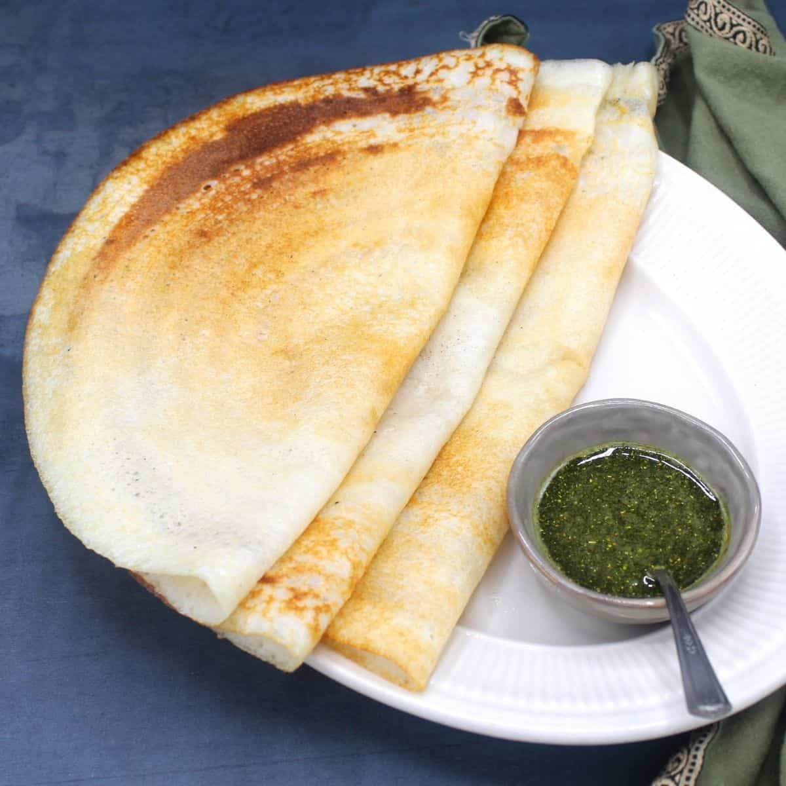

Dosa

The jewel of South Indian crepes, the dosa is a must-have for anyone looking to explore this wonderful cuisine.
Ingredients
- 3/4 cups of parboiled rice
- 3/4 cups of regular rice
- 1/4 teaspoon of Fenugreek seeds
- 1/2 cup of urad dal
- 1/2 tablespoon of Chana dal (optional)
- Salt to taste
- Water as required
- Oil, for shallow frying
Instructions
- Take all the ingredients to prepare the dosa batter.
- Rinse both types of rice (regular rice and parboiled rice) together in water for 3-4 times and soak them in 2 cups of water for 4-5 hours – (Place both types of rice in a medium-size bowl and fill it with water till 3/4th height. Rinse the rice by rubbing them between your fingertips; the water will turn cloudy. Drain the water and repeat the process 3-4 times).
- Rinse urad dal and chana dal together in water, add fenugreek seeds and soak in 1 cup water for 4-5 hours.
- Drain water from urad dal in a small bowl and reserve it (it will be used in the next step while grinding the dal). Add drained urad dal, chana dal and fenugreek seeds mixture in the medium jar of a mixer grinder or blender.
- Add water as needed and grind until smooth and fluffy batter
- The batter should be fluffy and not very thick. Transfer it to a large container.
- Drain water from rice and add them to the same mixer grinder jar. Depending on the size of the jar, you can ground the rice in multiple batches.
- Add water as needed and grind until smooth texture. Don’t add too much water in a single go; add 1-2 tablespoons water at a time.
- Add salt and mix both batters well using spoon. The final batter should not be too thick or too watery. Cover it with plate and leave it at room temperature for 8-10 hours or overnight for fermentation.
- During fermentation, the batter volume would increase and the tiny bubbles would appear on the surface when you stir it with a spoon. Stir the batter with a spoon.
- Heat non-stick tava or iron tava (skillet or griddle) over medium flame. Sprinkle few drops of water on the surface. If water drops sizzle and evaporate within few seconds, tava is hot enough to cook. Apply 1/2-teaspoon oil on the griddle and spread it evenly with a spatula or a clean wet cloth.
- Apply 1-teaspoon oil (or ghee / butter for crispy dosa) around the edges of dosa (or spread oil/ghee/butter evenly with brush for crispy dosa).
- Cook until the bottom surface turns light brown and the edges start to come upward, it will take around 2-minutes.
- Flip it and cook for a minute. Transfer it to a plate. Wipe tava with clean wet cloth before making next dosa (this is to prevent dosa from sticking to Pan) and repeat the process from step-11 to step-13 for remaining batter.
Return to home page